Páginas estáticas en Amazon - 1
Tal como comentamos el pasado artículo Publicación estática el uso de sitios estáticos es cada vez más habitual por seguridad o por su eficiencia tal como comentaba Ersiko en ese mismo artículo, por otro lado tenemos a Amazon como proveedor y líder indiscutible en servicios de computación y en este artículo los vamos a unir.
Usando algunos de los servicios de Amazon pondremos nuestra página estática online, no intentamos explicar todo el funcionamiento de Amazon ya que sería una tarea titánica para este pequeño artículo, solamente nos centraremos en los servicios necesarios para exponer una página estática.
Consola web
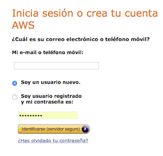
Primero nos damos de alta en AWS en aws.amazon.com, con un pequeño formulario proporcionando nuestros datos y aunque tenemos unos cuantos servicios gratuitos durante el primer año, en este tutorial no entramos en eso ya que alguno de los servicios que vamos a usar no son gratuitos. AVISO: recordamos que aunque Amazon tiene servicios gratuitos, alguno de los servicios tratados en este pequeño tutorial comportan un cargo económico.
Una vez finalizada la entrada de datos podemos acceder a nuestro nuevo servicio y la pantalla principal será similar a esta:
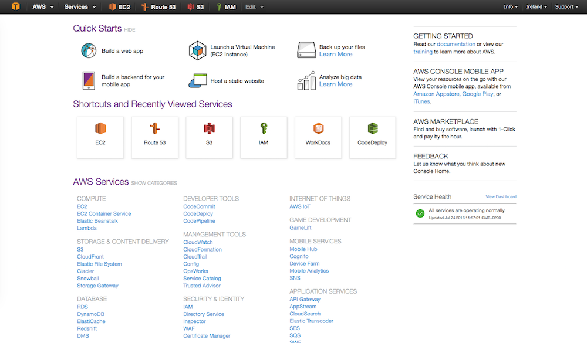
Si encontráis otra pantalla, probablemente es que estáis usando la versión antigua ya que vuestro usuario se dio de alta hace tiempo. El nombre de los servicios es el mismo y la única diferencia la localización en la pantalla.
IAM
IAM o Identity and Access Management es el sistema de autenticación que permite dar acceso y permisos tanto a usuarios, como a las máquinas, por lo que a través de estos roles podemos controlar que un usuario tenga permitido hacer unas acciones pero no otras.
Con la seguridad en mente y aunque no es obligatorio realizar este punto, nuestra recomendación es añadir la protección multifactor a la cuenta. Como se puede ver en la siguiente imagen de la entrada del IAM hay unos iconos amarillos, pero cada uno de ellos aumenta el nivel de seguridad por lo que todos tendrían que estar en verde:
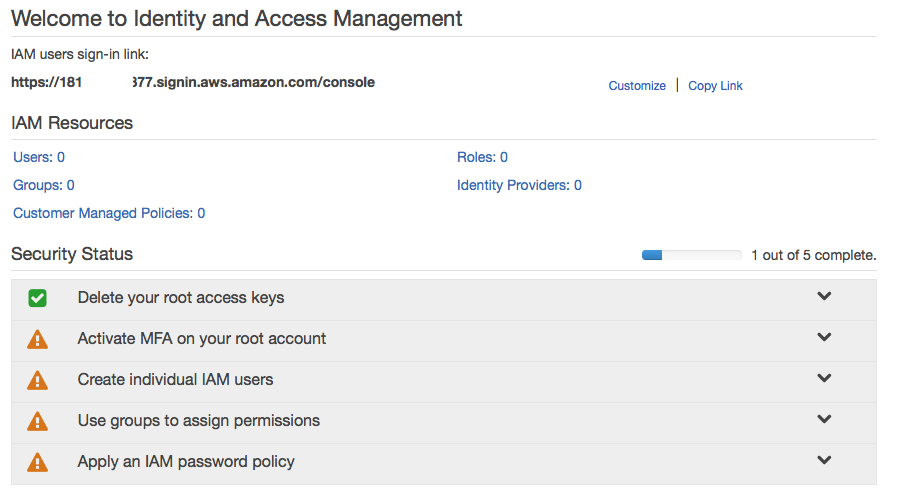
Desplegamos el segundo icono (primer amarillo) y activamos el multifactor (MFA), seleccionando la opción de “dispositivo virtual” podemos utilizar una de las aplicaciones compatibles en el móvil y capturar el QR con el móvil. (en esta imagen ha sido vaciada por el centro)
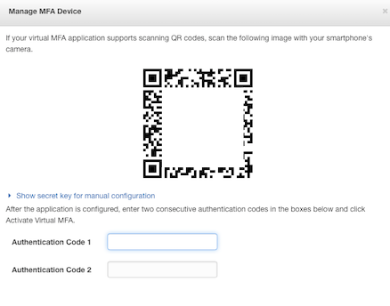
En el móvil tenemos que tener instalado una de estas aplicaciones compatibles con Amazon AWS:
- Android: Google Authenticator; Authy
- iPhone: Google Authenticator
- Windows Phone: Authenticator
- Blackberry: Google Authenticator
Esto hará que cuando entremos en la página nos pida el password y también el número que aparece en ese momento en la pantalla del móvil, como se muestra en la imagen:
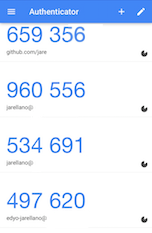
Como se puede ver es una gran ayuda y muchos entornos usan esta autenticación por dos pasos, siempre que se pueda activar es una gran ayuda para la seguridad de los entornos.
Repasando lo realizado hasta el momento, ya tenemos una cuenta en Amazon AWS y una forma segura para entrar, ahora necesitamos un espacio para guardar los ficheros y una forma de acceder a ellos, del listado servicios de Amazon nos fijaremos en: S3, Route53
S3 o Simple Storage Service
S3, como hemos dicho, es el espacio donde dejar nuestros ficheros. El funcionamiento de s3 esa través de buckets, o dicho de otra forma, separaciones lógicas y en el caso que tenemos se han separado por dominios, vamos a crear un bucket llamado dondever.es aquí vamos a alojar los ficheros de la página web.
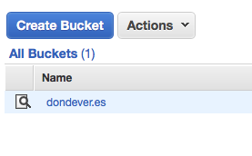
Una vez creado lo seleccionamos y podemos ver a la derecha Static website hosting al marcarlo se despliega y podemos seleccionar Enable website hosting le añadimos el nombre del fichero que queramos como inicio de nuestra página que habitualmente será index.html
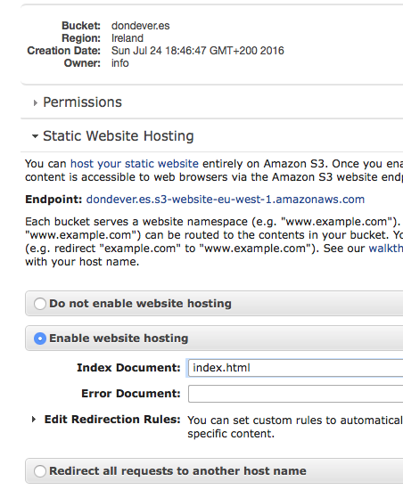
Una vez realizado este cambio podemos guardar la dirección URL que nos marca como Endpoint en este caso es:
dondever.es.s3-website-eu-west-1.amazonaws.com
Esto significa que si en el navegador ponemos la URL que nos indique podemos acceder a una bonita página de error ya que no hay ningún fichero index.html en el bucket, de hecho no hay ningún fichero, por lo que vamos a subir un fichero entrando en el bucket y ejecutando la acción upload del botón Actions, seleccionamos el fichero o los ficheros que queremos subir y obtendremos algo parecido a:
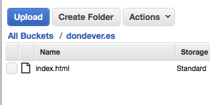
Y si lo probamos ahora, aparece un bonito error que nos indica que no tenemos permisos, por lo que tenemos que ir al botón Permissions del bucket
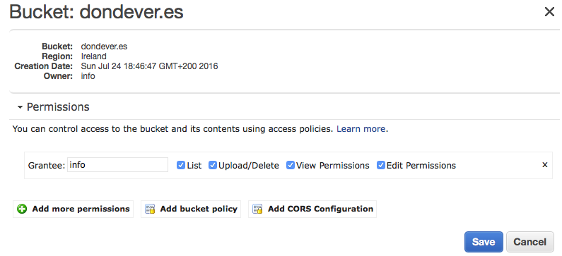
y al acceder a Add bucket policy nos aparecerá un recuadro donde tenemos que poner el siguiente texto:
{ "Version":"2012-10-17", "Statement":[{ "Sid":"PublicReadGetObject", "Effect":"Allow", "Principal": "*", "Action":["s3:GetObject"], "Resource":["arn:aws:s3:::dondever.es/*" ] } ] }
En este caso dondever.es es el nombre del bucket que hemos creado y por lo tanto, se ha de sustituir por el nombre de cada uno de los buckets que tengamos.
Ahora sí, ya podemos acceder a la URL y ver nuestro index.html correctamente, pero realmente el nombre : dondever.es.s3-website-eu-west-1.amazonaws.com no es muy bonito, para ello podemos usar un dominio propio, por ello presentamos Route53.
Route53
No es necesario usar Route53 para realizar este paso, ya que se puede usar un servicio DNS externo que nos apunte el dominio que queramos hacia nuestro bucket de S3 a través de un registro DNS de tipo CNAME. Pero para explicar el funcionamiento DNS de Amazon lo que haremos será usar Route53.
Para ello crearemos una "Hosted Zone" mediante el botón "Create Hosted Zone"
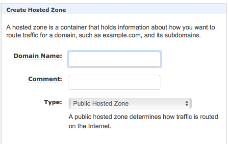
Le indicamos el dominio y el tipo dejamos "Public Hosted Zone" , para que sea accesible desde internet.
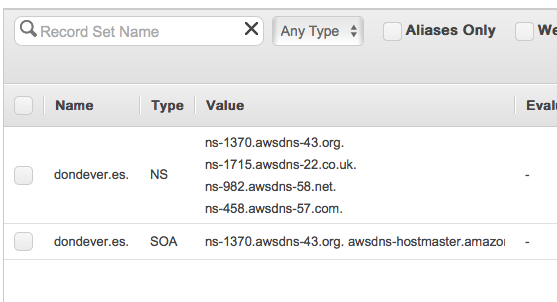
Al hacer esto se habrán creado 2 registros, uno de ellos es NS y el otro indica SOA. El que nos interesa es el NS, con los 4 servidores que aparecen en el registro NS nos iremos a nuestro registrador de dominio y le indicaremos los servidores que nos ha proporcionado Amazon
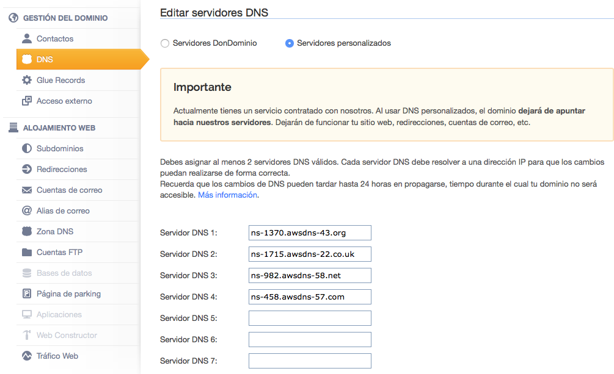
De esa forma Route53 ya puede gestionar los subdominios, entonces cuando los servidores DNS se propaguen (pueden tardar días) las peticiones finalizaran en Amazon. Pero ahora lo que falta es decir a Amazon que lo que hemos creado en Route53 y lo que hay en S3 se han de unir.
Vamos a la consola de Route53 y añadimos un "Record Set", pero este registro es muy especial, es del tipo Alias, se le marca del tipo "A" y en la parte de abajo Alias "Yes" entonces en "Alias target" nos muestra todos los endpoint de S3, por lo que seleccionamos el que nos interesa
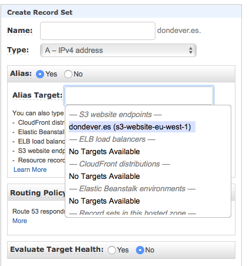
De esa forma el registro del dominio, va a buscar los datos al bucket S3. Y finalmente nos quedan estos registros:
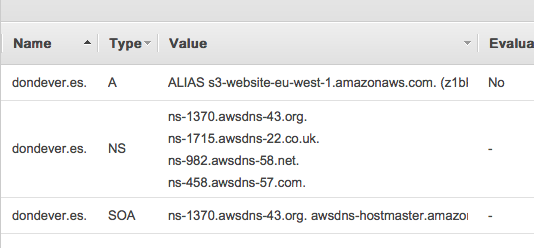
Con esto ya somos capaces de ver el resultado una vez se han propagado los registros DNS.
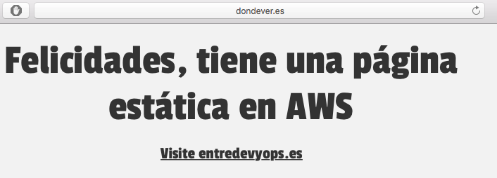
En la segunda parte de este tutorial tratará de la realización de un blog con una herramienta de generación de contenido estático, por lo que tendremos que profundizar en el funcionamiento de IAM para no tener que subir los ficheros a través de la consola, sino usar un sistema automático.